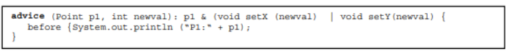
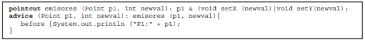
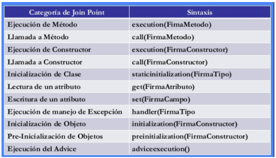
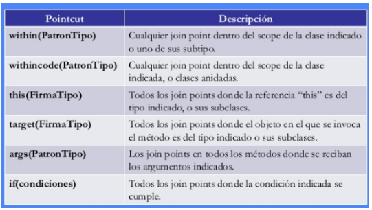

PROGRAMACIÓN ORIENTADA A ASPECTOS.
CONCEPTOS CLAVES
ASPECTO(Aspect):
“Un aspecto es una unidad modular que se disemina por la estructura de otras unidades funcionales. Un aspecto de diseño es una unidad modular del diseño que se entremezcla en la estructura de otras partes del diseño. (G. Kiczales).“

PUNTO DE UNIÓN/ENLACE(Joint point):
Punto de ejecución dentro del sistema donde un aspecto puede ser conectado:
- Llamada a un método
- Lanzamiento de una excepción
- Modificación de un campo.

CONSEJO(Advice):
Es la implementación del aspecto, es decir, contiene el código que implementa la nueva funcionalidad. Se insertan en la aplicación en los Puntos de unión. Dentro de ellos podemos encontrar:
- before : justo antes de proceder al joint-point (ej: justo antes de entrar al getter, o al constructor, etc)
- after returning: justo después del return de un método.
- after throwing: justo después de que lanza una exception.
- after: al salir de un método, sin importar si fue por exception o por flujo normal (return)
- around: cuando el flujo llega a ejecutar el join-point, permite que nuestra lógica pueda determinar si proceder o no.
A continuación se muestra un Consejo que fue declarado de manera anónima. Esto siginifica que no se declaró un Pointcut o Corte antes del Consejo.

PUNTOS DE CORTE(Pointcut):
Define los Consejos que se aplicarán a cada Punto de Cruce. Un pointcut es un predicado o condición para la aplicación de un aspecto.
Se puede entender mas claramente en la siguiente imagen, donde el programa hace un llamado a un advice, el cual se definirá atravez de un pointcut, el cual tendrá diferentes joinpoints del cual podrá escoger uno o varios aspectos para ser ejecutados (Algo enredado, pero mas adelante se explica mejor esa diferenciación entre pointcut y joinpoint..)

A continuación un ejemplo de un Punto de Corte (Pointcut) y también un Consejo declarado por un Pointcut.

Joinpoints por Categoría:

Algunos Pointcut importantes:

VAMOS CON EL EJEMPLO...
Cuando sales a comer a un restaurante, estando en él, miras el menú y hay varias opciones que se pueden escoger de platos fuertes, ensaladas, postres, etc. Después de ver que hay en el menú escoges uno o mas de estos platos, pero hasta que estos no sean ordenados y el mesero no te los traiga son solo "oportunidades para cenar".

Los joinpoints son las opciones que hay en el menu y los pointcuts son los platos que se ordenan. Hablando dentro del ámbito de la programación. Un joinpoint es una oportunidad dentro del código para la aplicación de un ASPECTO; una vez se toma esa oportunidad y se selecciona uno o mas joinpoints, al aplicar un ASPECTO de ellos se tendrá un pointcut.
Pero bueno, a nosotros nos gusta ver como se verían todos estos conceptos aplicados ya en un programa. Supongamos que tenemos una tienda, la cual tendrá diferentes empleados. El administrador de la tienda va a tener todo el manejo de los empleados, incluyendo todas las operaciones CRUD (Create, Read, Update, Delete), hasta Como sera el inicio de sesión a la aplicación por parte de los empleados. Este inicio de sesión o Loggin sera el Aspecto que tendrá nuestra aplicación.
La imagen a continuación explicara claramente donde estarían cada uno de los conceptos anteriormente mencionados dentro de un programa. Este programa fue implementado utilizando Spring AOP + AspectJ.

Tal vez aun no quede claro estos conceptos mencionados anteriormente, pero en secciones posteriores encontraran mas ejemplos que ayudaran a entender mejor el paradigma de Programación Orientada a Aspectos
INTRODUCCIÓN(Introduction):
Permite añadir métodos o atributos a clases ya existentes. Un ejemplo en el que resultaría útil es la creación de un Consejo de Auditoría que mantenga la fecha de la última modificación de un objeto, mediante una variable y un método setUltimaModificacion(fecha), que podrían ser introducidos en todas las clases (o sólo en algunas) para proporcionarles esta nueva funcionalidad.
DESTINATARIO(Target):
Es la clase aconsejada, la clase que es objeto de un consejo.
RESULTANTE(Proxy):
Es el objeto creado después de aplicar el Consejo al Objeto Destinatario.
Estas definiciones de Target y proxy se entienden mejor en la siguiente imagen, donde claramente se ve que la clase aconsejada o Target es la clase FooService y el objeto creado Proxy despues de aplicar ese Concejo es FooServiceProxy

TEJEDOR(Weaving):
El tejedor se encarga de mezclar los diferentes mecanismos de abstracción y composición que aparecen en los lenguajes de aspectos y componentes ayudándose de los puntos de enlace.
Este proceso puede ocurrir a lo largo del ciclo de vida del programa:
- Aspectos en Tiempo de Compilación.
- Aspectos en Tiempo de Carga, los Aspectos se implementan cuando el Objeto Destinatario es cargado.
- Aspectos en Tiempo de Ejecución.
Este concepto de Tejedor es muy importante dentro de la Programación Orientada a Aspectos, este es el que nos va a mezclar el Programa de componentes descrito por un Lenguaje base, y los diferentes Programas de Aspectos, cada uno descrito por su propio Lenguaje de aspectos

Tipos de Entrelazado:
-
Entrelazado Estático:
El entrelazado estático implica modificar el código fuente de una clase insertando sentencias en estos puntos de enlace. Es decir, que el código del aspecto se introduce en el de la clase. Un ejemplo de este tipo de tejedor es el Tejedor de Aspectos de AspectJ.
La principal ventaja de esta forma de entrelazado es que se evita que el nivel de abstracción que se introduce con la programación orientada a aspectos se derive en un impacto negativo en el rendimiento de la aplicación. Pero, por el contrario, es bastante difícil identificar los aspectos en el código una vez que éste ya se ha tejido. -
Entrelazado Dinámico:
Una pre condición o requisito para que se pueda realizar un entrelazado dinámico es que los aspectos existan de forma explícita tanto en tiempo de compilación como en tiempo de ejecución.
Para conseguir esto, tanto los aspectos como las estructuras entrelazadas se deben modelar como objetos y deben mantenerse en el ejecutable. Dado un interfaz de reflexión, el tejedor es capaz de añadir, adaptar y borrar aspectos de forma dinámica, si así se desea, durante la ejecución.
Este tejedor también tiene en cuenta el orden en el que se entremezclan los aspectos. Esto lo resuelve asignando una prioridad al aspecto. El aspecto que tenga asignado un número menor es el que se teje primero, y por lo tanto, aparecerá antes en la jerarquía de herencia.
El principal inconveniente subyacente bajo este enfoque es el rendimiento y que se utiliza más memoria con la generación de todas estas subclases.
Una de las primeras clasificaciones de las formas de combinar el comportamiento de los componentes y los aspectos fue dada por John Lamping:- Yuxtaposición. Consiste en la intercalación del código de los aspectos en el de los componentes. La estructura del código mezclado quedaría como el código base con el código de los aspectos añadidos en los puntos de enlace. En este caso, el tejedor sería bastante simple.
- Mezcla. Es lo opuesto a la yuxtaposición, todo el código queda mezclado con una combinación de descripciones de componentes y aspectos.
- Fusión. En este caso, los puntos de enlace no se tratan de manera independiente, se fusionan varios niveles de componentes y de descripciones de aspectos en una acción simple.
VIENDO TODOS ESTOS CONCEPTOS ANTERIORMENTE MENCIONADOS, SE PUEDE PUEDE VER LA DIFERENCIA EN LA ESTRUCTURA DE LA IMPLEMENTACIÓN ENTRE LOS LENGUAJES TRADICIONALES Y LOS LENGUAJES DE ASPECTOS

COMO SE VE, EL CONCEPTO DEL TEJEDOR SE VUELVE FUNDAMENTAL EN LA PROGRAMACIÓN ORIENTADA A ASPECTOS. ADEMÁS QUE LA IMPLEMENTACIÓN DEJA DE SER UNA IMPLEMENTACIÓN SECUENCIAL Y PASA A SER UNA IMPLEMENTACIÓN MODULARIZADA.

En la anterior imagen se puede observar graficamente como funciona el tejedor. El tejedor tendria las siguientes repercusiones dentro del codigo final: